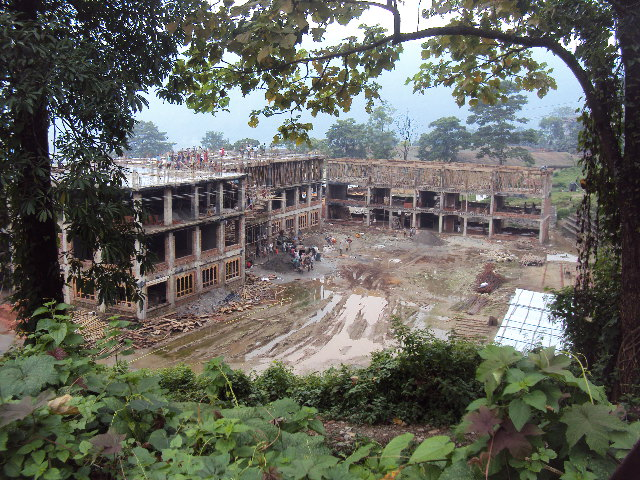

School was initially constructed as a lower secondary school in 2013.
However, in the subsequent year it was upgraded to middle secondary
school to ease admission pressure in other schools. This school is a
product of a close partnership between the Royal Government of Bhutan
and the Government of India. It was formally opened on 16th July, 2013
with 968 students and 36 teachers headed by two vice – Principals. In
the following year school was took over by Mr. Dorji Tshering as a
first Principal of the school with 945 students and 35 teachers. The
school was consecrated by His Holiness Venerable Tsugla Lopen Rimpochi
and inaugurated by Mr.Jitender Kumar Sharma, Consul General, Consulate
of India, Phuentsholing on 16th May, 2014. Locally, it is called
Dhamdara, however the present name of a school was given by His
Holiness Trulku Jigme Choeda, 70th Jey Khenpo of Bhutan. It is
beautifully located on a gentle slope overlooking Phuntsholing town.
It shares boundary with Phuntsholing General Hospital towards the
North and Food Cooperation of Bhutan towards South-West. It is
situated approximately 1 km away from the gate way of Bhutan,
Phuntsholing.

Academic Program
Non-Academic Program
Pastoral Care
Educational Program
 Executive Secretary
Executive Secretary
 Dasho Thrompon
Dasho Thrompon